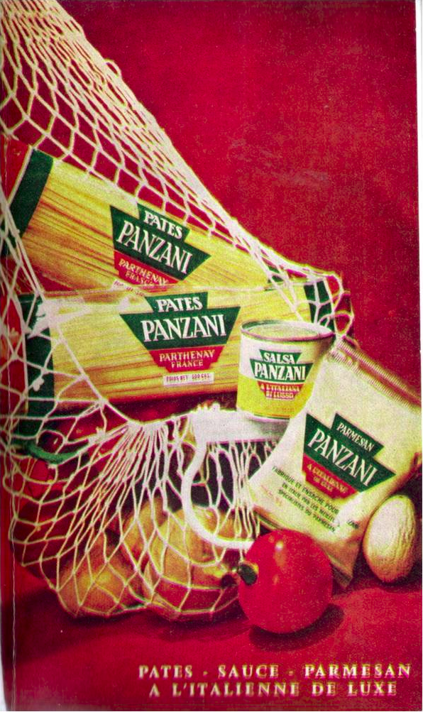
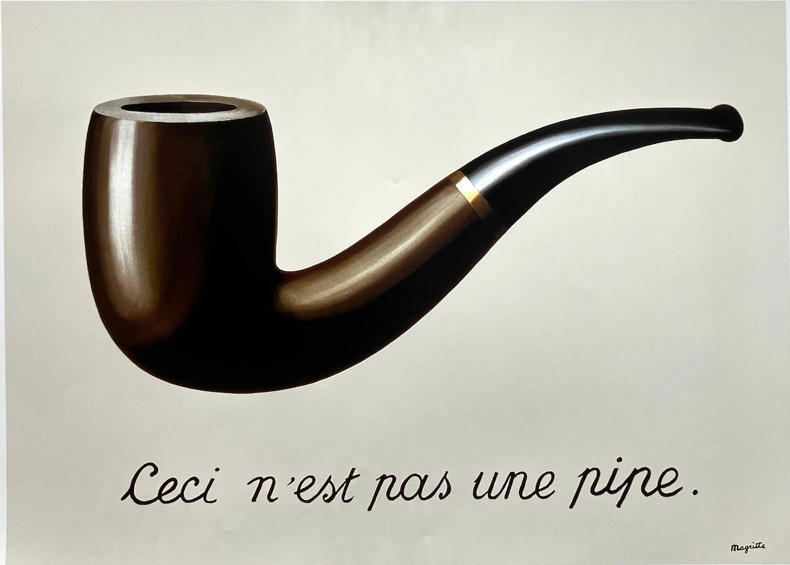
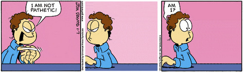

Summer 2026 — Day 2 · May 18
Reading critically,
for credibility.
Lateral reading and how we research.
Professor Glenn S. Ritchey III
ENC 1102 · Composition II
Department of Writing and Rhetoric
Today — 110 minutes
Where we're going.
01
Recap & this week's logistics
~10 min
02
Carillo & Horning on credibility
Lateral reading · misinformation vs. disinformation · primary vs. secondary · bias.
~40 min
03
Activity — applying lateral reading
In small groups, from the chapter.
~20 min
04
Walking through a theoretical reading
One of Barthes / Benjamin / McLuhan — modeled together for Reading Summary 1.
~25 min
05
Activity — reverse outline + summary scaffold
Practice for the Reading Summary template.
~15 min
Heads up — Wednesday
We meet at
the library.
A librarian is giving us a research presentation. Don't come to our usual classroom.
I'll be standing out front of the library, near the entrance by the Chick-fil-A in the breezeway, to usher everyone in. If you're lost — find me there.
WHERE
UCF Library — breezeway entrance
By the Chick-fil-A. Look for me out front.
AFTER THE TALK
Reflection on the discussion board
We'll reflect on the presentation and help each other surface other aspects of library research worth knowing.
Part 1 — A reading I'm walking you through
How do you
trust a source?
Carillo & Horning on critical reading, lateral reading, and the credibility of what you find online.
The reading
"Effectively and Efficiently Reading the Credibility of Online Sources"
Carillo, Ellen, and Alice Horning.
Writing Spaces, vol. 4, eds. Driscoll, Heise,
Stewart & Vetter. Parlor Press, 2022, pp. 35–50.
The central premise
Reading and writing are
related interpretive practices.
Good reading skills are essential to developing effective writing abilities. You can't write a credible source-based paper if you can't read sources credibly.
And on the open web, that means leaving the page in front of you.
Two ways the web misleads you
Both are wrong.
Only one is on purpose.
WRONG, BUT NOT MALICIOUS.
Misinformation
Incorrect information that gets passed along without the intent to deceive. A friend repeating a bad statistic. A blog citing an outdated study.
WRONG, AND WEAPONIZED.
Disinformation
Factually incorrect information spread maliciously — designed to deceive, manipulate, or harm. Intent is the line that separates the two.
Definitions from Carillo, MLA Guide to Digital Literacy, p. 13, as cited in Carillo & Horning 43-44.
A small study with a big finding
Fact-checkers don't
stay on the page.
Wineburg and McGrew gave the same digital sources to three groups — Stanford undergrads, PhD historians, and professional fact-checkers — and asked them to assess credibility. Two groups did the same thing. One group did something different.
Undergrads & PhDs
Read vertically.
Stayed on the source. Scanned up and down the page. Judged the source by its own design, typos, references, and presentation.
A site that looks credible looks credible. Which is exactly the problem.
Professional fact-checkers
Read laterally.
Immediately left the source. Opened tab after tab to look up the sponsoring organization, the author, and what other sites said about both.
They judged the source from outside it.
The move that changes everything
"Lateral reading… involves
leaving the source and moving
to other sources across the Web
to assess the source's credibility."
— Carillo & Horning, p. 38
A method you can actually use
Three steps for
reading laterally.
01
Leave the site →
Check it against fact-checking sites.
Does the site or claim already appear on a hoax-busting site? Try Snopes, PolitiFact, or FactCheck.org — nonpartisan and designed for exactly this question.
02
Leave the site →
Investigate the author.
What can you find about them elsewhere? Are they an expert on this subject? What else have they written? What organizations are they affiliated with — and what biases might that surface?
03
Leave the site →
Investigate the site itself.
Who or what sponsors or owns the site? Does that ownership suggest a bias? Is the site selling something? Who is its audience? Could a commercial interest be in conflict with the information it provides?
A small aside: I'd recommend a search engine that isn't Google for this — Google places ads first. DuckDuckGo and Qwant are both privacy-focused and tend to return cleaner results for credibility checks.
A distinction that protects your reading
Primary sources first.
Then everyone else.
Primary
First-hand,
direct information.
The thing itself — produced at the source, not about it.
photographs · audio & video recordings · letters & diaries · government documents · speeches · historical documents · literature · art · research studies · interviews
Secondary
Accounts about
primary sources.
Sources that summarize, interpret, or draw on primary sources in some way.
book & movie reviews · scholarly articles about novels · news stories about scientific studies · explainers · syntheses
Go to the primary source first when you can. It lets you form your own judgments before someone else's framing influences yours — and it lets you recognize the biases in the secondary sources you find later.
When the primary source is an image
"Seeing is
believing" — isn't.
Photoshop and similar software have been around long enough that any image online could be a manipulation of an earlier one. The fix is the same move: leave the image and look it up elsewhere.
A reverse image search shows you everywhere the image appears on the web — so you can find the original, find earlier versions, and read laterally about who's used it and how.
RIS
Reverse image search.
Drop the image into a reverse-image tool. Track down where it first appeared. Compare versions. Read what others have said about it. Then decide what it is.
A 2026 ADDENDUM
This chapter is from 2022.
Photoshop-style edits aren't the sole threat anymore — but the proliferation of generative AI represents a significant concern. The practice listed here still works (leave the image, look it up), but expect to find originals that don't exist.
The last (and hardest) piece
Recognize bias —
especially your own.
A
Biased ≠ incorrect.
Biased information is skewed. Incorrect information is wrong. Don't conflate them — a source can be biased and still factually accurate.
B
You can't remove bias.
Your job isn't to find an unbiased source. It's to recognize the bias in each perspective, weigh its effect on credibility, and negotiate it as you build your own argument.
C
Confirmation bias.
When you only seek out and believe evidence that confirms what you already think. It feels like research. It isn't.
In practice: monitor the perspectives of your sources, and deliberately seek out sources that oppose your idea. A well-rounded read of a topic is the only honest one.
Activity 1 of 2 — from the chapter
How do you
read the web?
Before we practice a new method, let's notice the one you already have.
DO THIS — 8 MINUTES
Pick a media artifact you actually care about — a show, film, album, game, creator, subculture — and research it as if you were starting a paper on it.
Open whatever tabs you'd normally open. Click whatever you'd normally click. The point isn't to find anything — it's to watch yourself look.
While you search, take notes:
01
How do you move from one site to the next?
02
Did you open new tabs? Follow hyperlinks?
03
Did you move deliberately or haphazardly?
04
Did you stop at the first source — or check it against others?
05
What does this tell you about yourself as a digital reader?
→
Then get into groups of 3-4 and share.
~5 min · what surprised you about your own habits?
Part 2 — Reading Summary 1
Modeling a
summary, together.
One of Barthes, Benjamin, or McLuhan — read carefully, summarized rigorously, scaffolded for your bibliography.
The text I'm walking you through
"Rhetoric of the Image"
Barthes, Roland.
Image–Music–Text, translated by Stephen Heath,
Hill and Wang, 1977, pp. 32–51.
"How does meaning get into the image? Where does it end? And if it ends, what is there beyond?"
— Barthes, p. 32
The argument, in one sentence
Every image carries three simultaneous messages — and reading an image rhetorically means separating them.
01 · Linguistic
The text on or with the image.
Caption, headline, dialogue, label. Carries both denotation (what it says) and connotation (what it suggests).
02 · Denoted
The literal image — what is there.
A "message without a code." A tomato is a tomato. Almost anthropological knowledge — you just need to know what a tomato is.
03 · Connoted
The symbolic image — what it means.
Cultural codes layered on top. Requires shared knowledge: stereotypes, conventions, aesthetic traditions. This is where rhetoric lives.
A worked example — Barthes' Panzani advertisement
Reading one image,
four ways at once.

Pasta, tin, sachet, tomatoes, onions, peppers, a mushroom — spilling from a half-open string bag. Yellows & greens on red.
A
"Return from the market."
The bag spilling open signifies freshness and domestic preparation, rather than the "mechanical civilization" of preserves and refrigerators.
B
"Italianicity."
The yellow / green / red palette plus the name Panzani — the assonance is itself a connoted sign. Requires knowing tourist stereotypes of Italy and the colors of its flag.
C
"Still life."
The composition itself — arrangement, framing, light — evokes the aesthetic tradition of nature morte. Requires art-historical literacy to read.
D
"This is an advertisement."
A meta-signal — the labels, the placement in a magazine. The image declares its function, even when nothing in the scene itself says so.
THE TAKEAWAY
Four readings, one image — and the number varies by viewer. Each of us brings a different set of "lexicons" (practical, national, cultural, aesthetic). The image doesn't have one meaning — it has as many as we can read into it.
The linguistic message — what text does to image
Two ways words and
images live together.

01 · Anchor
Magritte, 1929
Text directs the reading of the image.
The caption "remote-controls" the viewer toward a chosen meaning — banishing some signifieds, foregrounding others. Magritte weaponizes the move: the words override what the picture seems to denote.

02 · Relay
Davis, Garfield
Text and image are fragments of one story.
Neither carries the whole meaning. Comics live here: the dialogue does the narrative work, the image carries the character — pull either and the joke collapses (hence Garfield Minus Garfield).
The line worth sitting with
"The more technology develops the diffusion of information
(and notably of images), the more it provides the means
of masking the constructed meaning under the
appearance of the given meaning."
— Barthes, p. 46
Barthes is writing in 1964 about magazine ads. Read this sentence again with algorithmic feeds, deepfakes, and generative imagery in mind. The construction has only gotten better at hiding itself.
Reading Summary 1 · due today
Why we're
summarizing.
Becoming a researcher means doing a lot of reading. Not every article will end up in your paper — but you need a record of what you read and what it gave you.
These first two summaries are low-stakes practice for the annotated bibliography. The framework is the same. You'll just do it ten more times when it counts.
STEP 1 — ANNOTATE
Choose a reading from the Class Library.
One of Barthes, Benjamin, or McLuhan — they're at the top of the Modules page. You'll need at least 2 of the 3 for the final paper, so this is also you building your theoretical framework.
STEP 2 — DEVELOP
Turn your notes into the summary.
You'll submit proof of the annotation work and the developed summary — together. The template (next slide) is what we're filling in.
Reading Summary Template — Dr. Mel Stanfill, ENG 6812 (Fall 2025)
What the summary
has to do.
01
Citation
In MLA format. See Purdue OWL for tips.
MLA
02
The author's argument
Ideally in one sentence.
1 sentence
03
Key points
The 2–3 main moves the argument makes.
2–3 bullets
04
Key terms / concepts
With definitions and page numbers.
2–3
05
Key quotations
With page numbers — the lines worth quoting back.
2–3
06
Strengths & limitations
This is where summary becomes analysis. What does the reading help you understand? What's strong about the writing? What's unanswered? What did the author miss?
2–3 of each
07
How it relates to your research
Topic, method, shared theorists, framing — any line of connection.
—
08
Connections to other authors
Who's in conversation? Who's talking about the same thing but not engaging each other? This gets easier as the semester goes on.
—
Activity 2 of 2 — In-class practice
Reverse outline.
A reverse outline is the outline the author would have written if they'd written one before drafting. You make it after-the-fact by asking, of each paragraph: what does this paragraph do, and what claim does it make?
By the end, you should be staring at the skeleton of the argument — which is exactly what you need to fill in the summary template.
For each paragraph, write one line:
01
Topic — what is this paragraph about?
02
Move — what is the paragraph doing? (defining, contrasting, citing, arguing, qualifying…)
03
Claim — what point is the author making here?
04
Then step back: what's the one-sentence argument the whole sequence adds up to?
→
Work in pairs · 15 min
Bring it to your chosen reading. Swap outlines. Compare what you each pulled out.
Before you leave
What to do
next.
01
Submit Reading Summary 1.
Due today, May 18 · 50 pts. Annotation proof + the developed summary using the template.
02
Library on Wednesday.
Meet me at the breezeway entrance by Chick-fil-A. Not our usual classroom. Discussion-board reflection after.
03
Reading Summary 2.
Due May 22 · 50 pts. A different one of Barthes / Benjamin / McLuhan. Same template, your second rep.
Lateral reading is the move underneath everything we'll do this semester — finding sources, weighing them, putting them in conversation. Today was the practice. The rest is reps.